Poder diseñar juegos y probarlos sin necesidad de programar los prototipos
Entender cómo funciona una IA y empezar a usar agentes
*No lo montaremos en móvil aquí, pero se puede
La IA no va a hacer un buen juego de verdad
El reto creativo ahora es mayor: hacer juegos que la IA no pueda hacer
¿Cómo predecimos las siguientes palabras?
¿Cómo puede predecir un ordenador?
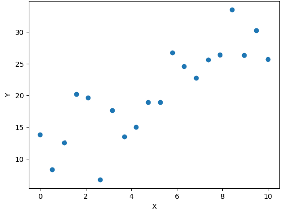
Figura 1: ¡Es todo estadística!
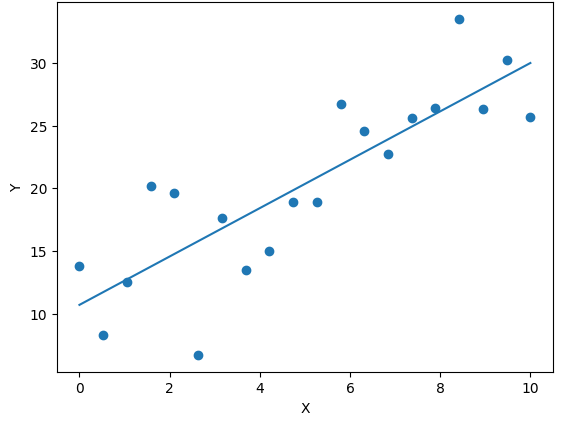
Figura 2: Pero le llamamos aprendizaje máquina
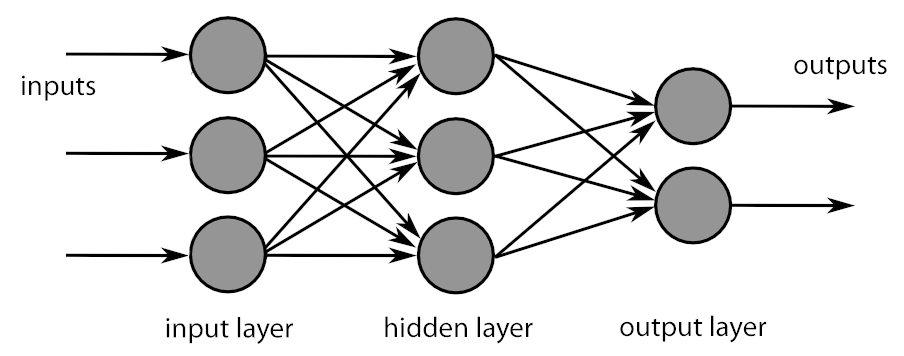
Figura 3: Y son modelos complejos
¿Cómo se puede, con números, hacer ChatGPT?
¿Pero por qué funciona tan bien?
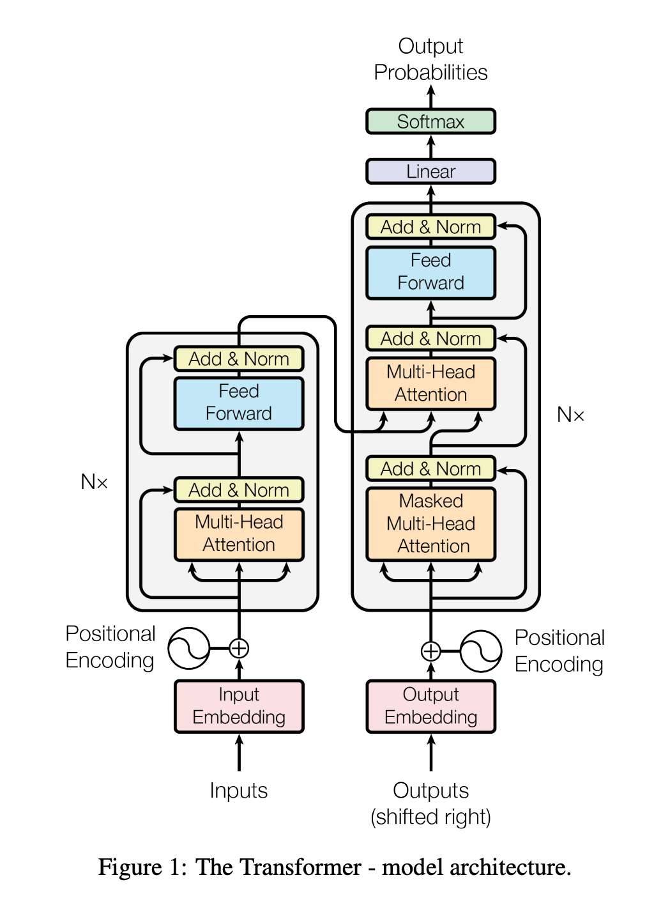
Figura 4: Arquitectura Transformer
Analiza todas las palabras a la vez, no una por una
Representa las palabras como vectores de números, y lo hace analizando muchísimas frases ya escritas por personas
"El perro corre" =
[ 0.21, -0.34, 0.89, 1.12, -0.56, 0.04, ... ]
"El gato corre" =
[ 0.24, -0.31, 0.85, 1.08, -0.52, 0.06, ... ]
Con esto, ya solo nos queda predecir, con estadística, la próxima palabra más probable
ChatGPT no sabe nada
No piensa
No entiende
Solo predice la próxima palabra más razonable
Prompt
↓
Tokenización
↓
Modelo
↓
Predicción de tokens
↓
Respuesta
Un LLM ya ha sido entrenado antes de que nosotros lo utilicemos
Cuando escribimos un prompt normalmente no estamos esos parámetros (no está aprendiendo)
Porque el modelo puede recibir como entrada parte de la conversación anterior (se le da «todo el histórico» en cada petición)
El modelo no puede recibir una cantidad infinita de información
Tiene una ventana de contexto y todo lo que entra en esa ventana compite por espacio
Cuando la conversación crece el sistema puede necesitar gestionar muchísimo contexto
Dependiendo de la herramienta puede resumir conversaciones anteriores, eliminar información o utilizar otros mecanismos para mantener la conversación dentro de los límites (por eso puede olvidar cosas)
No de la misma forma que cuando entrenamos (no se llama aprendizaje en este caso)
Si decimos:
> No quiero que utilices variables globales
el modelo puede utilizar esa información en las siguientes respuestas si sigue presente en el contexto
Pero no estamos modificando permanentemente el modelo para que todos sus futuros usuarios sepan que no queremos Singletons
Un LLM puede adaptar su respuesta al contexto:
Pero sus parámetros (los «números» que lo definen) no van a cambiar
El modelo puede representar relaciones muy complejas entre conceptos, palabras, código y estructuras
Genera texto utilizando los patrones representados en sus parámetros y el contexto disponible
Cuando utilizamos Copilot CLI no estamos hablando solamente con un modelo
Estamos usando herramientas que dan datos adicionales al prompt aunque no lo veamos
> Arregla el bug del inventario
El agente puede «decidir» añadir al contexto (porque el LLM lo genera así) archivos, resultados de ejecutar herramientas, logs…
Podemos describir una intención
> Quiero que el enemigo persiga al jugador pero
vuelva a su posición inicial cuando lo pierda de vista
El agente puede llamar a herramientas (ls, grep, git), añadir su salida al contexto, y volver a generar y llamar otra vez a herramientas
Empezamos de 0, ya no recuerda nada del contexto
Hay herramientas que, al iniciar una sesión de agente, meten contexto predeterminado (y parece que «te conocen mejor»), pero es solo un proceso adicional:
Un buen vibe coder no solo sabe escribir prompts, sabe decidir qué información necesita el modelo (archivos, restricciones, errores, resultados…)
Poner de más puede llevar al modelo a alucinar o sobregeneralizar, poner de menos puede hacer que falte información relevante
El system prompt contiene instrucciones que establecen el comportamiento general del modelo para esa interacción
SYSTEM: Cómo debe comportarse. En el bajo nivel, tiene unos tokens ocultos que le dan peso sobre la respuesta (por cómo está entrenado)USER: Qué queremos conseguir (nuestro prompt en cada iteración)(En un agente real normalmente hay muchas más piezas)
El contexto es toda la información disponible para generar una respuesta:
Meh…
> Hazlo más rápido
Mejor:
> Estamos haciendo un juego 2D en Godot
El enemigo tiene actualmente 200 agentes
El cálculo de pathfinding ocurre cada frame
Hazlo más rápido
Una tarea puede producir muchísima información (pregunta + sistema + tools + output…)
Cada vuelta puede añadir información
No podemos proporcionar indefinidamente:
Podemos imaginarla como una caja con capacidad limitada
Todo lo que queremos que el modelo tenga disponible debe caber dentro de esa ventana
El sistema necesita gestionar el contexto
Dependiendo de la herramienta puede
El resumen es una representación de la conversación anterior que no necesariamente contiene cada detalle
El objetivo es conservar suficiente información para continuar la tarea
Los logs son especialmente peligrosos para el contexto
Podemos hacer:
[agente]$ npm install
y obtener cientos o miles de líneas
Pero quizá solo necesitamos
ERROR: package X requires Node 22
Meter todo el log en el contexto puede consumir espacio sin aportar información útil
Podemos estructurarla
Cada etapa debería aportar información útil al contexto
Puede tener sentido empezar de nuevo cuando
Una sesión nueva no conoce automáticamente todas las decisiones anteriores
Por eso podemos preparar un resumen
OBJETIVO
ESTADO ACTUAL
DECISIONES
RESTRICCIONES
ARCHIVOS IMPORTANTES
PROBLEMAS CONOCIDOS
PRÓXIMO PASO
Y utilizarlo como contexto inicial
Una de las mejores formas de conservar decisiones técnicas es escribirlas en el propio proyecto
Por ejemplo
ARCHITECTURE.md
- El inventario utiliza InventoryComponent
- No utilizamos Singleton
- Los objetos implementan IItem
- El inventario tiene 20 huecos
Algunas herramientas permiten definir instrucciones específicas para un proyecto
Podemos imaginar varias capas
REGLAS DEL PROYECTO
↓
DOCUMENTACIÓN
↓
CÓDIGO
↓
CONTEXTO DE LA SESIÓN
↓
PROMPT ACTUAL
Cada capa aporta información diferente
Es positivo usar Markdown:
# REGLAS
"Usamos C#"
"No usamos Singleton"
# DOCUMENTACIÓN
"El sistema de inventario funciona así"
# CÓDIGO
Implementación real
# SESIÓN
"Ahora estamos arreglando RemoveItem()"
# PROMPT
"Corrige este error"
Más tokens de entrada pueden significar
Por eso gestionar el contexto es también una cuestión de eficiencia
/compact)Usaremos VSCode y su integración con agentes
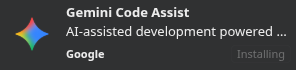
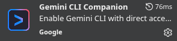
(pero ahora hay que usar Antigravity)
La cuenta de la UCM proporciona un cuenta da acceso a Google Workspace y Microsoft 365: tuusuario@ucm.es
La disponibilidad concreta de cada servicio puede depender de la licencia y de la configuración institucional
En Microsoft 365 · Mi cuenta → Suscripciones puedes ver que tienes acceso a Copilot
Un vez ahí, entra en Copilot 365 (integrado con los servicios de Office 365).
Si no tienes una cuenta de GitHub, créala
Usa la dirección tuusuario@ucm.es para que sea de estudiante
Entra en:
Pulsa en Start an application
Completa la verificación como estudiante.
Los estudiantes verificados obtienen acceso gratuito a GitHub Copilot Student (200 créditos para estudiantes)
Necesitas Node.js:
[usuario$/]$ npm install -g @github/copilot
o, si no tienes permisos de escritura como administrador (sin -g):
[usuario$/proyecto/]$ npm init --yes
[usuario$/proyecto]$ npm install @github/copilot
Después:
[usuario$/proyecto]$ copilot
Dentro de Copilot CLI, inicia sesión:
/login
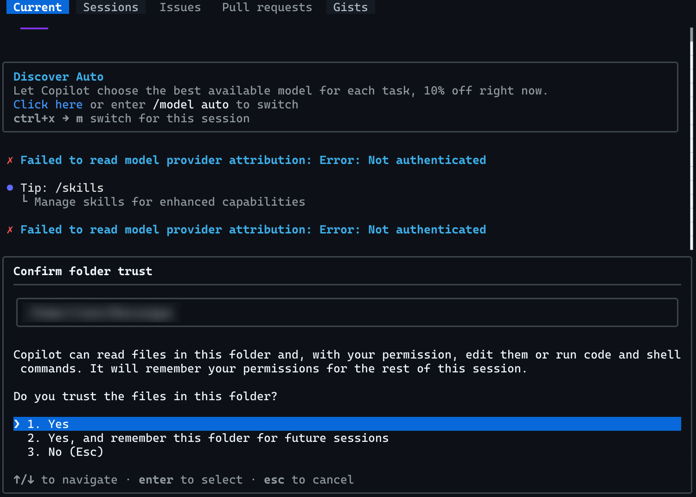
Figura 5: Copilot CLI
Para usar los modelos de Google, hay que usar Google Antigravity
Hay que:
Por dentro, Antigravity tiene el mismo editor que VSCode
https://aistudio.google.com/rate-limit
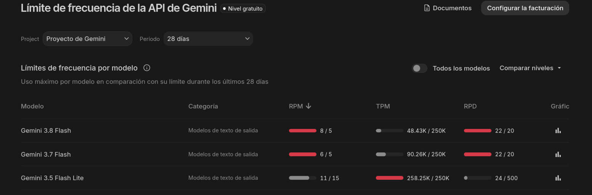
Figura 6: Gestión de tokens en AI Studio de Google
Es posible ejecutar modelos de lenguaje en local (sin necesidad de usar un servicio externo)
Hay varias formas, una muy sencilla es con llamafiles
Y hay muchos modelos disponibles
Generar una aventura conversacional tipo Zork (con Gemini Antigravity, por ejemplo) sin tocar código
Entender costes de la IA, saber gestionarlos
Elementos básicos para empezar a montar un diseño robusto escribiendo nuestras ideas
Un token es una pequeña pieza de texto que el modelo utiliza como unidad de procesamiento
El modelo no trabaja directamente con palabras como las vemos nosotros, sino con los tokens
Palabras: "hola", "perro"
Sufijos: "ito", "anti"
Puntuación: ".", "?", " "
Marcas: "#"
Dependiendo del idioma y la situación, podemos asumir entre un 25% y un 45% (aproximadamente) más de tokens que de palabras
La tokenización puede ser aún más agresiva:
GetPlayerHealth()
Por eso no debemos «contar palabras» para estimar los tokens
Porque los servicios de IA utilizan los tokens para medir el uso
Normalmente distinguimos:
Haz que el jugador pueda hacer doble salto
El agente puede enviar además
Cada modelo (a través del agente) tienen una ventana de contexto máxima
La ventana de contexto limita cuánto puede tener en cuenta el modelo al mismo tiempo
Cuando utilizamos una API de pago, los tokens suelen ser una de las unidades utilizadas para calcular el precio
Más tokens
↓
Más AIC
↓
Más proceso
↓
Mayor consumo
↓
Mayor coste
Un modelo puede tener un precio determinado para:
1.000.000 tokens ≠ 1.000.000 tokens de coste
GitHub utiliza los AI Credits como unidad para medir el uso de Copilot
Podemos pensarlo así
Tokens
↓
Precio del modelo
↓
AI Credits
↓
Dinero
El coste depende principalmente de
Una interacción corta con un modelo ligero puede costar una fracción de AI Credit
Una sesión larga con un modelo avanzado puede consumir muchos más
Los planes de GitHub Copilot incluyen una cantidad mensual de AI Credits (recordad que tenemos algunos por la UCM/cuenta de estudiante)
GitHub permite establecer un presupuesto para uso adicional («meter» 10€ e ir gastándolos)
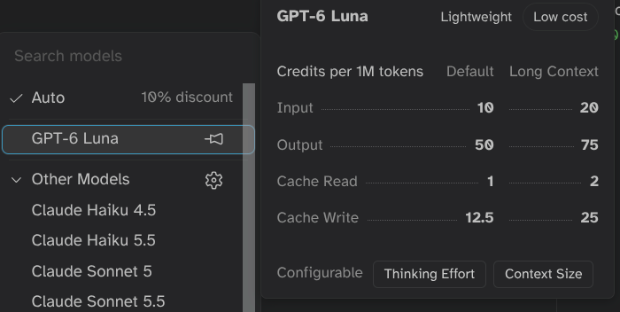
Figura 7: El modelo importa (mucho)
Hay que tener control de la ventana de contexto tanto por información por cada coste de interacción
Solución: controlar el contexto, decirle al agente lo que queremos que esté y lo que no
Enfocar nuestra query para contextos específicos
La declaración de tipos vale como esquema para el LLM y de comprobación adicional para el agente
Arrancar y mantener un proyecto con TypeScript requiere más trabajo manual, pero lo hace el agente
TypeScript debería dar mejor código
Se pasan unos poquitos tokens más, pero suele ser más robusto
function attack() {
- this.damage = 10
+ this.damage = 15
+ this.playAttackAnimation()
}
- han sido eliminadas+ han sido añadidas function takeDamage(amount) {
- this.health -= amount
+ this.health -= amount * 2
}
Se le puede preguntar al agente (aunque nos suele dar el resumen en cualquier caso)
Resume únicamente los cambios de comportamiento
No me expliques el código
Quiero saber
- Qué ha cambiado
- Qué mecánicas cambiaron
- Qué debería notar el jugador (dinámicas)
Deberíamos siempre leer el diff y evaluar antes de aplicar
ollama junto con un arnés (harness) como Cline os puede valer para usar solo herramientas de código abierto
Es un sistema que testing muy completo en tiempo real
Te «mira» el DOM y la pantalla para ver si todo está funcionando
Puede disparar el consumo, es mejor no activarlo para tests evidentes (mejor decirle al agente que algo «no ha funcionado»)
Es muy útil tener archivos de texto con información general para prompts (y no estar copiando y pegando)
Cuando el LLM no esté haciendo lo que queramos, añadimos una frase con restricciones → si funciona, lo agregamos al archivo
Comenzar con el concepto de juego, poder subir el proyecto, preparar el repositorio
Conocer Phaser y desarrollo web
Montar y publicar lo primera versión del juego
Phaser es un framework para crear videojuegos 2D web
Utiliza JavaScript o TypeScript
Se puede jugar también exportando a escritorio o a móvil
Menos rendimiento que motor nativo, pero excelente para prototipar
Muchas acciones del juego tienen una correspondencia bastante clara con código
this.add.sprite(...)player.x += ...this.anims.play(...)this.sound.play(...)this.scene.start(...)La IA puede encargarse de buena parte del trabajo mecánico
Mientras nosotros nos concentramos en
(Si hace falta)
Cuando arrancamos Phaser creamos un Game:
const config = {
type: Phaser.AUTO,
width: 960,
height: 640,
PARENT: 'juego',
scale: {
mode: Phaser.Scale.FIT,
autoCenter: Phaser.Scale.CENTER_BOTH,
},
pixelArt: true,
scene: [BootScene, WorldScene, DungeonScene, EndScene, UIScene],
physics: {
default: 'arcade',
arcade: {
gravity: { x: 0, y: 0 },
debug: false,
},
},
};
new Phaser.Game(config);
SpriteText
Un GameObject tiene propiedades y comportamiento y pertenece a una Scene
Podemos cambiar su posición, escala, rotación, visibilidad y otras características
Contienen los objetos y son la base del main loop:
Una Scene suele tener métodos como
preload()
create()
update(t, dt)
render() // no os hará falta
preload() es un lugar habitual para cargar los assets que necesita una Scene
Por ejemplo
preload() {
this.load.image(
'player',
'assets/player.png'
)
}
Después podemos utilizar ese asset mediante su key
this.add.image(400, 300, 'player')
create() se ejecuta cuando la Scene está preparada, antes de empezar
Creamos el contenido:
create() {
// crea un Sprite usando esta imagen y colócalo aquí
this.player = this.add.sprite(
400,
300,
'player'
)
}
update() se ejecuta continuamente durante el juego
update() {
// el jugador avanza continuamente
this.player.x += 1
}
Un objeto visual basado en una textura animada
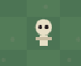
Figura 8: Ejemplo de Phaser.GameObjects.Sprite
Podemos rotarlo, escalarlo, animarlo, interactuar…
preUpdate(t, dt) {
super.preUpdate(t, dt) // no olvidar
// Cada sprite tiene su propio "update"
// aquí podemos poner la lógica de nuestra entidad
}
Phaser tiene un Loader para cargar estos recursos
Normalmente los cargamos antes de necesitarlos
Por ejemplo
this.input.keyboard
o podemos hacer interactivo un GameObject
button.setInteractive()
Tenemos Arcade Physics y Matter JS
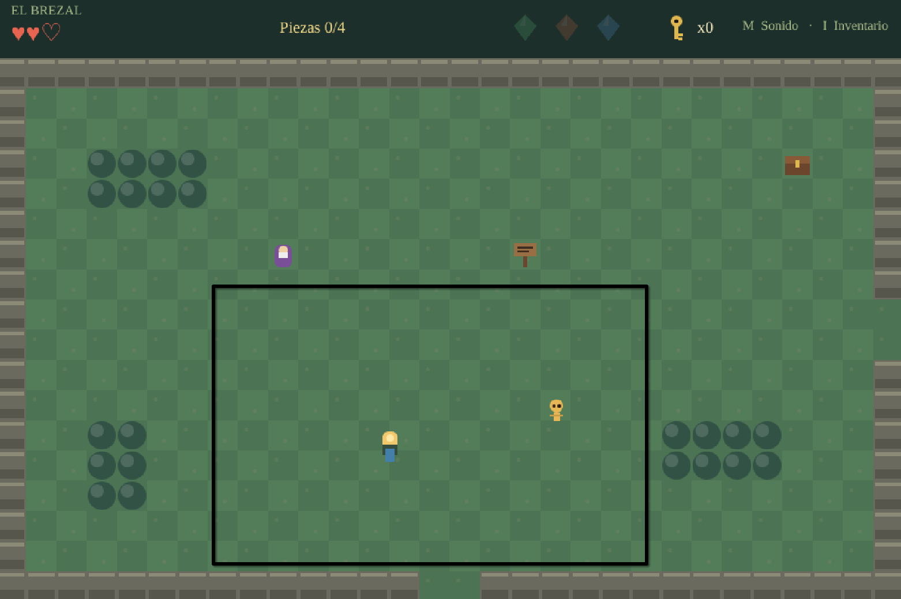
Figura 9: Región de cámara
Con herramientas externas para:
Material para grado de videojuegos con Phaser
(Por si alguien lo necesita)
Para visualizar cualquier escena necesitamos:
Scene → Camera → Renderer → Pantalla
const scene = new THREE.Scene();
const camera = new THREE.PerspectiveCamera(
75,
window.innerWidth / window.innerHeight,
0.1,
1000
);
const renderer = new THREE.WebGLRenderer();
renderer.setSize(width, height);
const geometry = new THREE.BoxGeometry();
const material = new THREE.MeshStandardMaterial({
color: 0x00ff00
});
const cube = new THREE.Mesh(
geometry,
material
);
scene.add(cube);
Tipos frecuentes:
const light =
new THREE.DirectionalLight(0xffffff, 2);
scene.add(light);
Todo juego necesita una actualización continua
function animate() {
requestAnimationFrame(animate);
cube.rotation.y += 0.01;
renderer.render(scene, camera);
}
animate();
const loader = new GLTFLoader();
loader.load("player.glb", (gltf) => {
scene.add(gltf.scene);
});
Three.js no incorpora físicas completas
Opciones:
const raycaster = new THREE.Raycaster();
Create new repository# Atención a poner la URL de SSH si queremos hacer `push' después
# Ejemplo:
<cleon@fdi.ucm.es ~>$ git clone git@github.com:cleongh/mvjvibecoding.git
{
"name": "Nombre del paquete node",
"description": "Mi juego es genial",
"repository": {
"type": "git",
"url": "git+https://github.com/cleongh/MI-REPOSITORIO.git"
},
"author": "Yo <mi@correo.electronico>",
"bugs": {
"url": "https://github.com/cleongh/MI-REPOSITORIO/issues"
},
"homepage": "https://github.com/cleongh/MI-REPOSITORIO#readme"
}
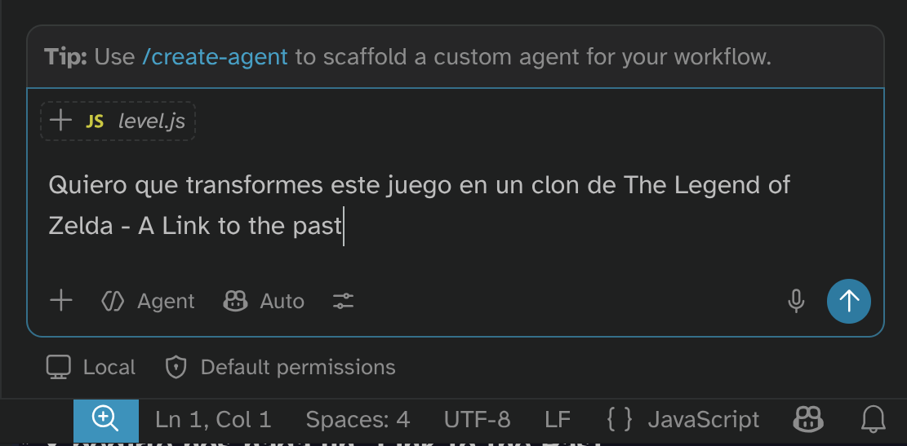
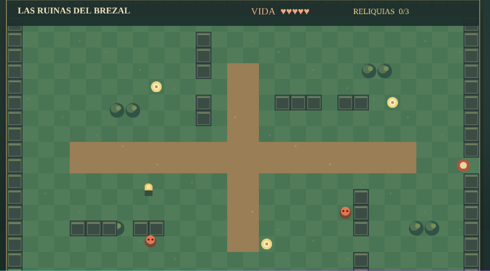
Figura 10: Y el resultado es funcional (GPT-6 Luna)
Ha hecho un juego funcional en unos minutos
git status, git diff o analiza el árbol para entender el contexto previogit add y redacta un mensaje de commit contextual basándose en las diferencias generadasEs necesario tener bien configurado el cliente de Git porque el agente usa línea de comandos
aider --auto-commits --model claude-3-5-sonnet
"Tras realizar y verificar un cambio funcional, ejecuta automáticamente 'git add' y 'git commit' con un mensaje en formato Conventional Commits."
Analiza este proyecto Phaser
No hagas cambios
Explícame
- Punto de entrada
- Scenes
- Sistemas
- Assets
- Física
- Input
- Configuración
- Cómo ejecutar el juego
> el proyectil suena y parece que dispara pero no "sale" del
enemigo--quizá colisiona con el enemigo. Veo que se genera un sprite
sin textura con la caja verde tachada de Phaser. el disparo se ejecuta
pero el proyectil no viene hacia el jugador
> Analiza cómo funciona actualmente el movimiento
del jugador-No hagas cambios todavía
> Propón tres formas de implementar el dash y explica
sus ventajas y desventajas
> Juega conceptualmente con esta mecánica y dime qué
problemas de diseño podría tener
CONTEXTO
Estamos haciendo un roguelite 2D
con Phaser y TypeScript
OBJETIVO
Crear el movimiento básico del jugador
REQUISITOS
Movimiento horizontal
Salto
Gravedad
Colisión con plataformas
RESTRICCIONES
No implementar todavía enemigos
No implementar todavía combate
No cambiar la estructura de Scenes
CRITERIO
El jugador debe poder recorrer
un nivel de prueba sin atravesar
las plataformas
En chat web:
> Estoy haciendo un juego con vibecoding. Quiero [...]. Escribe un prompt
para Copilot (GPT Luna 6)
Pasar vuestro concepto de juego a Phaser
Montar el juego y las ideas principales
Con todo ya en marcha, comenzar a desplegar el prototipo
Tenemos que hacer las preguntas apropiadas
↓
Imaginar el resultado y refinar
↓
Prototipar y comprobar
El LLM solo va a tener impacto en la comprobación, no en el diseño
¿Puedo pedirle un diseño a la IA?
🤣
El LLM tras el agente solo es un modelo estadístico y queremos centrar su espacio para reducir ruido
Nuestra mente cambia de foco constantemente y eso puede degenerar la generación
Cada petición tiene un coste
↓
Hay que tener estrategias para el vibe coding
Muy útil en los primeros pases del proyecto
Juego
↓
Sistemas
↓
Mecánicas
↓
Componentes
↓
Código
Empezamos con
Quiero un juego top-down de exploración y combate
en una mazmorra
Después
Divide el juego en sus sistemas principales
No escribas código todavía
Vamos creando:
Ahora elegimos un sistema
Desarrolla el sistema de combate
Divide el sistema en mecánicas
y dependencias
Todavía no programes nada
Y podemos llegar a
Combate
├── Ataque
├── Daño
├── Vida
├── Invulnerabilidad
├── Enemigos
├── Hitboxes
├── Feedback
└── Muerte
Elegimos una mecánica
Diseña el ataque cuerpo a cuerpo
Quiero saber
- Qué input utiliza
- Cuánto dura
- Qué estados intervienen
- Cómo detectamos el impacto
- Cómo aplicamos el daño
- Qué feedback necesitamos
Bottom-up funciona en dirección contraria
Especialmente útil cuando ya tenemos un prototipo o queremos descubrir el juego a partir de una mecánica
Componente
↓
Mecánica
↓
Sistema
↓
Juego
Empezamos con
Quiero probar una mecánica
El jugador puede engancharse
a determinados puntos del escenario
y balancearse
No sabemos todavía qué juego completo queremos
Construimos primero la mecánica
Crea una escena mínima
Un personaje
Un punto de anclaje
Una cuerda
No necesitamos arte
Quiero comprobar únicamente
si el movimiento resulta divertido
Ahora añade varios puntos de anclaje
Mantén exactamente
la mecánica existente
No cambies la física
Despúes:
Añade obstáculos
Después
Añade un objetivo
Después
Añade puntuación
Mecánica
↓
Nivel
↓
Desafío
↓
Progresión
↓
Juego
Una buena conversación con el agente puede cambiar constantemente de escala
Implementa el dash
- No Cambies el sistema de movimiento
- No cambies la Scene principal
- No añadas librerías
- No modifiques los assets
- No reescribas el PlayerController completo
Haz únicamente los cambios necesarios
Haz el cambio mínimo necesario
para conseguir este comportamiento
No refactorices código que no esté
relacionado con esta tarea
Si necesitas modificar otra parte
del proyecto, indícamelo antes
Activamos el modo /plan, con el menú en VSCode, o:
Antes de modificar el código,
propón un plan de implementación
Divide el trabajo en pasos pequeños
No hagas cambios todavía
Podemos delegar:
Pero debemos mantener nosotros
Implementa exactamente
esta especificación
No cambies el diseño
No añadas funcionalidades
Si falta información,
pregunta antes de asumir
Actúa como revisor técnico
Busca problemas en esta implementación
No escribas código
Dime
- Bugs potenciales
- Casos límite
- Dependencias
- Problemas de rendimiento
- Problemas de mantenimiento
Actúa como diseñador de sistemas
Analiza esta mecánica
Busca
- Bucles de gameplay
- Incentivos
- Riesgos
- Estrategias dominantes
- Casos aburridos
- Posibilidades de explotación
Analiza esta mecánica
desde el punto de vista
de un jugador que nunca
ha visto el juego
¿Qué información falta?
¿Qué podría resultar confuso?
¿Qué debería aprender
en los primeros 30 segundos?
Actúa como QA
Busca casos límite
para este sistema
Especialmente
- Input simultáneo
- Reinicio
- Cambio de Scene
- Destrucción de objetos
- Valores extremos
- Estado muerto
- Estado pausado
Ahora no quiero que programes
Quiero que actúes como diseñador
Ahora actúa como programador
Ahora actúa como QA
Ahora revisa la experiencia como diseñador
de juego
El agente puede construir herramientas, no solo gameplay:
Hemos prototipado estas tres mecánicas
- Dash
- Parry
- Ataque cuerpo a cuerpo
Analiza qué tipo de loop de gameplay
podría surgir de su combinación
No programes nada
Propón estructuras posibles
El juego tendrá
- Exploración
- Combate
- Recolección
- Progresión
Quiero prototipar primero
la parte más crítica
Identifica qué mecánica mínima
debemos implementar para validar
el núcleo del juego
Demasiado grande
Haz el juego completo
Demasiado pequeña
Cambia 1 por 2
Una tarea útil
Implementa el dash
Incluye input,
movimiento,
cooldown
y feedback mínimo
No implementes todavía
progresión ni efectos finales
Tener primer prototipo jugable con Phaser
Mejorar la profundidad del prototipo y el flujo de trabajo:
Construir
↓
Cambiar
↓
Probar
↓
Cambiar
↓
Probar
# MECÁNICA
[qué hace]
# INPUT
[qué pulsa el jugador]
# ESTADO
[qué estados existen]
# REGLAS
[qué puede y no puede hacer]
# PARÁMETROS
[variables importantes]
# FEEDBACK
[qué debería ver/escuchar]
# INTERACCIONES
[con qué sistemas interactúa]
# CRITERIO
[cómo sabemos que funciona]
Va a funcionar muy bien «acercarse» al modelo técnico:
Limitado:
> "Está mal"
Mejor:
Cuando pulso espacio mientras corro,
el personaje no salta
No aparece ningún error en consola
El movimiento horizontal sí funciona
Investiga por qué ocurre
> Me dice "Cannot read properties of undefined"
El juego falla al iniciar
Error de consola:
[pegar error completo]
El error aparece al cargar GameScene
Investiga la causa
No cambies nada todavía
Dime
1. Qué línea falla
2. Por qué falla
3. Qué objeto esperaba encontrar
4. Qué solución propones
Si el error es de diseño, hay que reevaluar, pensar y decidir qué cambiar
La IA suele proponer generalidades, es improbable que os dé la idea de cómo solucionarlo
El jugador atraviesa la pared
Puede ser
- Collider incorrecto (mira esto primero)
- Física mal configurada
- Hitbox incorrecta
- Orden de actualización
- Coordenadas erróneas
El modelo estadístico «cambiará de foco» si le guiamos
Dad ideas, sed específicos
Es una máquina de generar código, no un «agente inteligente»
Los LLMs son excelentes resumidores:
> Dime en un párrafo la arquitectura del
sistema de inventario
La tarea está terminada cuando
- El jugador puede hacer dash
- El dash dura 0.2 s
- El cooldown es configurable
- No puede hacerse durante el cooldown
- La animación se reproduce
- No se rompe el movimiento normal
El dash funciona
Quiero calibrarlo
Actualmente
Velocidad = 900
Duración = 0,2 s
Cooldown = 1,2 s
Quiero una sensación
más frecuente y menos dominante
Propón tres configuraciones
No cambies el código todavía
Seguramente, hay que hacerla a mano
Puedes pedirle al agente que te diga en qué línea de código está la constante que quieres cambiar
Añade temporalmente
una visualización de las hitboxes
Utiliza colores diferentes para
- Player
- Enemigos
- Ataques
- Hurtboxes
Haz que pueda activarse
con una tecla
Añade una opción de debug
que muestre
- Posición del jugador
- Posición de la cámara
- Zoom
- Límites del mundo
No cambies el comportamiento
normal cuando el debug esté desactivado
Añade visualización temporal para los enemigos
Quiero ver
- Objetivo actual
- Estado de IA
- Distancia al jugador
- Ruta calculada
Solo en modo debug
Hay problemas que un test automático no detectará
¿Qué ocurre si
- El jugador pulsa dos veces
- El jugador está en el aire
- El jugador recibe daño
- El enemigo muere durante el ataque
- La escena cambia
- El jugador reinicia
- El objeto desaparece
No reiniciemos necesariamente todo
No quiero esa solución
El problema es que has añadido un segundo
sistema de movimiento
Quiero mantener el sistema existente
Deshaz únicamente los cambios relacionados
con esa implementación
Después propone una alternativa que reutilice
el sistema actual
O podemos ir hacia atrás en Git
Podemos compactar: /compact
O podemos preparar resumen para nueva sesión:
Resume el estado actual del sistema
Incluye
- Decisiones tomadas
- Parámetros
- Arquitectura
- Problemas pendientes
- Próximo objetivo
No hagas cambios
AGENTS.md
reglas permanentes del repositorio
ARCHITECTURE.md
estructura técnica y límites del sistema
DESIGN.md
intención de diseño y comportamiento esperado
SKILL.md
procedimiento especializado bajo demanda
TASK.md
cambio concreto de la iteración actual
# Propósito
Este repositorio contiene prototipos jugables creados con Phaser 4
El objetivo es validar mecánicas y flujos de interacción
# Comandos
## Instalar
~npm install~
## Desarrollo
~npm run dev~
## Pruebas
~npm test~
## Build
~npm run build~
# Reglas
- Conserva la estructura de escenas
- No cambies mecánicas ajenas a la tarea
- No añadas dependencias sin justificarlo
- No ocultes errores de TypeScript o JavaScript
- No desactives pruebas
- Mantén separados código de juego y herramientas de depuración
- Lee ~ARCHITECTURE.md~ antes de mover módulos
- Lee ~DESIGN.md~ antes de alterar reglas jugables
# Validación
Antes de terminar
1. Ejecuta las pruebas
2. Ejecuta el build
3. Prueba la escena modificada
4. Comprueba la consola
5. Informa de archivos y decisiones
6. Indica qué no has podido validar
proyecto/
AGENTS.md
src/
AGENTS.md
gameplay/
AGENTS.md
ui/
AGENTS.md
tools/
AGENTS.md
# Arquitectura
## Punto de entrada
~src/main.js~ crea la instancia de Phaser y registra las escenas
## Escenas
- ~BootScene~ carga configuración mínima
- ~PreloadScene~ carga recursos
- ~GameScene~ coordina la partida
- ~HudScene~ presenta información
- ~AssetLabScene~ permite inspeccionar recursos
- ~PrototypeMenuScene~ selecciona prototipos
## Sistemas
- ~InputSystem~ traduce entradas a acciones
- ~MovementSystem~ aplica movimiento
- ~CombatSystem~ resuelve impactos
- ~GameState~ mantiene el estado compartido
- ~DebugOverlay~ presenta variables de prueba
## Flujo de entrada
1. Phaser recibe teclado o mando
2. ~InputSystem~ produce una acción
3. La escena entrega la acción al sistema correspondiente
4. El sistema actualiza el estado
5. La escena representa el resultado
## Dependencias permitidas
- Las escenas pueden utilizar sistemas
- Los sistemas pueden utilizar modelos
- Los modelos no pueden acceder a escenas
- La interfaz no modifica directamente la física
- El código de depuración no altera reglas jugables
# Decisión
Utilizar eventos para comunicar gameplay y HUD
## Contexto
La interfaz necesita observar cambios de energía, salud y puntuación
## Decisión
Los sistemas emiten eventos
~HudScene~ escucha los eventos y actualiza la representación
## Consecuencias
- Gameplay y HUD permanecen separados
- Los nombres de los eventos forman una API interna
- Los eventos necesitan pruebas
- La interfaz puede cambiar sin modificar la lógica
¿Qué son «agent skills»?
my-skill/
SKILL.md
scripts/
references/
assets/
SKILL.md contiene metadatos e instruccionesscripts contiene operaciones ejecutablesreferences contiene documentación consultada bajo demandaassets contiene plantillas y recursos estáticosSKILL.md es obligatorio---
name: optimize-game-assets
description: Optimiza imágenes PNG mediante la herramienta externa pngquant
---
# Optimize Game Assets
Usa esta skill cuando el usuario quiera reducir el tamaño de archivos PNG
## Entrada
- Ruta de la imagen PNG
- Calidad mínima y máxima opcionales
## Ejecución
Ejecuta el siguiente comando mediante la terminal
pngquant \
--quality=70-90 \
--output "/mnt/data/optimized.png" \
--force \
"/mnt/data/input.png"
## Comprobaciones
1. Verifica que pngquant esté instalado
2. Comprueba que el archivo de entrada existe
3. Ejecuta la herramienta
4. Comprueba que optimized.png se ha creado
5. Informa del tamaño original y del tamaño final
## Restricciones
- No sobrescribas el archivo original
- Guarda el resultado final en /mnt/data
- Si la herramienta falla, muestra un resumen del error
No quiero que el dash atraviese las paredes
Sí quiero que atraviese enemigos
La prioridad es
paredes → bloquean
enemigos → atraviesa
Corrige únicamente esta regla
Prioridades
1. El jugador no puede atravesar paredes
2. El dash atraviesa enemigos
3. El dash no puede utilizarse muerto
4. El dash tiene cooldown
Añade sonido al ataque
Y modifica, ataque, animaciones…
Has modificado sistemas que no forman
parte de esta tarea
Revierte esos cambios
Mantén únicamente la integración del sonido
Añade sonido al ataque
El asset ya existe
Necesito que además
- Se cargue durante preload
- Se reproduzca al comenzar el ataque
- No se reproduzca si el ataque falla
- Respete el volumen configurado
No hace falta repetir todo el contexto
Mantén todo lo anterior
Cambia únicamente esto
El cooldown del dash debe pasar
de 1,2 s a 0,8 s
También podemos utilizar el agente
Diseña una sala para enseñar
la mecánica del dash
El jugador debe descubrir
1. Que puede hacer dash
2. Que puede atravesar enemigos
3. Que tiene cooldown
No quiero tutorial textual
Utiliza el diseño espacial
para enseñar la mecánica
El jugador todavía no conoce
el doble salto
Diseña una secuencia de plataformas
que comunique la necesidad
de utilizarlo
No añadas texto
La geometría debe hacer evidente
qué debe intentar el jugador
El primer nivel introduce
el parry
Diseña tres encuentros
1. Seguro
2. Intermedio
3. Exigente
Cada encuentro debe enseñar
una consecuencia diferente
de usar el parry
Analiza esta mecánica
y encuentra casos límite
Especialmente cuando
- Cambia el estado del jugador
- Se destruyen objetos
- Cambia la Scene
- Se recibe input simultáneo
No hagas cambios
Dame primero la lista de casos
que deberíamos probar
Modela los estados del jugador
Idle
Correr
Salto
Caída
Dash
Ataque
Herida
Muerte
Indica qué transiciones existen
No programes todavía
Implementa únicamente la máquina de estados
No añadas nuevos comportamientos
Cada transición debe ser explícitay fácil
de depurar
Revisa el PlayerController
Busca
- Estados duplicados
- Flags contradictorias
- Código repetido
- Dependencias innecesarias
- Lógica difícil de modificar
No hagas cambios
Explica primero qué problemas encuentras
Quiero que el jugador
tenga que decidir entre
atacar ahora
o esperar
¿Qué mecánicas podrían crear
esa tensión?
Dame cinco propuestas
Implementa la opción 3
Utiliza el sistema de combate existente
Mantén los valores configurables
No añadas UI
Comprueba que
- El jugador puede atacar
- La decisión tiene dos resultados
- No hay estados bloqueados
- El enemigo responde correctamente
Juega conceptualmente el encuentro
¿El jugador tiene información suficiente
para tomar la decisión?
¿Hay una opción claramente dominante?
¿El feedback permite entender
qué ha ocurrido?
Crea una herramienta de debug
para colocar enemigos
haciendo click sobre la escena
Debe permitir
- Crear enemigo
- Eliminar enemigo
- Reiniciar escena
Crea una pequeña UI de debug
Permite modificar en tiempo real
playerSpeed
jumpForce
gravity
dashSpeed
dashCooldown
Los cambios solo deben afectar
al modo de desarrollo
No modifiques el comportamiento
por defecto
Crea un generador de salas
Cada sala debe tener
- Entrada
- Salida
- Entre 2 y 4 enemigos
- Entre 1 y 3 obstáculos
Evita generar habitaciones
sin camino entre entrada y salida
Primero implementa el generador
sin arte
Quiero cerrar este milestone
Debe incluir
- Movimiento
- Cámara
- Un enemigo
- Ataque
- Daño
- Muerte
No incluyas
- Inventario
- Guardado
- Menús
- Arte final
El objetivo es tener
un combate mínimo jugable
Tener el juego funcional y visible y la documentación desplegada
Mejorar la profundidad del prototipo y el flujo de trabajo:
Especificación
→ generación
→ transformación
→ validación
→ integración
→ prueba en contexto
# Asset
Enemy Scout
## Función en el juego
Enemigo rápido y frágil que explora el escenario
## Formato
- SVG
- Lienzo lógico de 64 por 64
- Tamaño visible habitual de 48 por 48
## Apariencia funcional
- Silueta triangular
- Vista lateral
- Núcleo circular visible
- Menor volumen que el enemigo pesado
## Paleta
- Estructura =#20242c=
- Cuerpo =#e85d4a=
- Núcleo =#f2c94c=
## Integración
- Clave ~enemy-scout~
- Origen en el centro
- Colisión circular
## Criterios de aceptación
- Reconocible a 48 píxeles
- Distinguible del enemigo pesado
- Sin referencias externas
- Sin texto
- Sin filtros SVG
assets/
source/
vector/
bitmap/
audio/
generated/
vector/
bitmap/
audio/
runtime/
images/
atlases/
audio/
manifests/
previews/
prompts/
reports/
source contiene los originales editablesgenerated conserva los resultados directos de modelos y herramientasruntime contiene archivos preparados para Phaserprompts conserva las instrucciones utilizadasreports almacena validaciones y decisionesruntimefinal, nuevo o este_sienemy-scout.svg
enemy-scout-damaged.svg
enemy-scout-preview.png
enemy-scout-source.png
enemy-scout-01.wav
enemy-scout-02.wav
Creamos un archivo con la listas de assets y sus especificaciones para que el agente lo procese así
{
"enemy-scout": {
"type": "svg",
"path": "assets/runtime/images/enemy-scout.svg",
"width": 96,
"height": 96
},
"forest-background": {
"type": "image",
"path": "assets/runtime/images/forest-background.webp"
},
"jump": {
"type": "audio",
"paths": [
"assets/runtime/audio/jump.ogg",
"assets/runtime/audio/jump.mp3"
]
}
}
<svg
xmlns="http://www.w3.org/2000/svg"
viewBox="0 0 64 64"
width="64"
height="64">
<path
id="body"
d="M12 48 L32 8 L52 48 Z"
fill="#2f80ed"/>
<circle
id="core"
cx="32"
cy="36"
r="8"
fill="#f2c94c"/>
</svg>
# Objetivo
Generar un SVG para representar un enemigo explorador
## Contexto del prototipo
- Juego 2D con vista lateral
- El enemigo es rápido y frágil
- El asset se mostrará normalmente a 48 por 48 píxeles
- Phaser cargará el SVG como textura
## Composición
- Lienzo lógico de 64 por 64
- Vista lateral estricta
- Silueta triangular
- Núcleo circular claramente visible
- Objeto centrado
- Ningún elemento fuera del lienzo
## Construcción
- Máximo de seis elementos gráficos
- Utiliza solo ~path~, ~rect~, ~circle~ y ~polygon~
- Añade un identificador semántico a cada elemento
- Incluye ~viewBox~
- Incluye ~width~ y ~height~
## Paleta
- Estructura =#20242c=
- Cuerpo =#e85d4a=
- Núcleo =#f2c94c=
## Restricciones
- Sin texto
- Sin filtros
- Sin scripts
- Sin eventos
- Sin imágenes incrustadas
- Sin fuentes externas
- Sin referencias a otros archivos
## Entrega
Devuelve únicamente el contenido completo del archivo SVG
No incluyas explicaciones antes ni después del SVG
## Validación previa a la entrega
- El XML es válido
- Solo existe un elemento raíz ~svg~
- El atributo ~viewBox~ contiene =0 0 64 64=
- Todos los elementos gráficos tienen identificador
- Solo aparecen los colores permitidos
- No existen referencias externas
# Objetivo
Modificar ~enemy-scout.svg~ sin rediseñar el asset
## Cambios solicitados
- Cambia el color del elemento ~body~ de =#e85d4a= a =#56ccf2=
- Aumenta el radio del elemento ~core~ de =8= a =10=
## Elementos que deben conservarse
- El atributo ~viewBox~
- Los atributos ~width~ y ~height~
- Todos los identificadores
- Todos los trazados
- La posición de cada elemento
- El orden de los elementos
## Restricciones
- No añadas elementos
- No elimines elementos
- No modifiques ningún elemento ~path~
- No cambies otros colores
- No añadas filtros
- No añadas scripts
- No añadas referencias externas
## Validación
- El resultado debe seguir siendo XML válido
- El número de elementos debe permanecer sin cambios
- Los únicos cambios permitidos son el color de ~body~ y el radio de ~core~
## Entrega
Devuelve el archivo SVG completo
Incluye una lista breve con los elementos modificados
export class AssetDemo extends Phaser.Scene {
preload() {
this.load.svg(
"enemy-scout",
"assets/runtime/images/enemy-scout.svg",
{
width: 96,
height: 96
}
)
}
create() {
const enemy = this.add.image(
400,
300,
"enemy-scout"
)
enemy.setDisplaySize(48, 48)
}
}
const enemy = this.add.image(
400,
300,
"enemy-scout"
)
enemy.setTint(0xff5555)
this.time.delayedCall(120, () => {
enemy.clearTint()
})
create() {
const graphics = this.add.graphics()
graphics.fillStyle(0x2f80ed, 1)
graphics.fillCircle(32, 32, 28)
graphics.lineStyle(4, 0xffffff, 1)
graphics.strokeCircle(32, 32, 20)
graphics.fillStyle(0xf2c94c, 1)
graphics.fillTriangle(
24,
38,
40,
38,
32,
20
)
graphics.generateTexture(
"radar-marker",
64,
64
)
graphics.destroy()
this.add.image(
400,
300,
"radar-marker"
)
}
create() {
this.range = this.add.graphics()
}
updateRange(radius) {
this.range.clear()
this.range.lineStyle(
2,
0x56ccf2,
0.7
)
this.range.strokeCircle(
0,
0,
radius
)
}
function createIconTexture(
scene,
key,
options
) {
const graphics = scene.add.graphics()
graphics.fillStyle(
options.background,
1
)
graphics.fillRoundedRect(
0,
0,
64,
64,
options.radius
)
graphics.fillStyle(
options.symbol,
1
)
graphics.fillCircle(
32,
32,
options.symbolRadius
)
graphics.generateTexture(
key,
64,
64
)
graphics.destroy()
}
createIconTexture(
this,
"health-icon",
{
background: 0x20242c,
symbol: 0xeb5757,
radius: 12,
symbolRadius: 10
}
)
# Objetivo
Crear mediante Phaser un marcador para señalar objetivos interactivos
## Resultado esperado
- Textura de 64 por 64
- Clave ~interaction-marker~
- Círculo exterior azul
- Círculo interior transparente
- Triángulo amarillo orientado hacia arriba
## Implementación
- Utiliza un objeto ~Graphics~
- Dibuja todas las formas dentro de 64 por 64
- Convierte el resultado con ~generateTexture~
- Destruye el objeto ~Graphics~ después de generar la textura
- Añade una instancia de prueba en el centro de la escena
## Colores
- Azul =0x2f80ed=
- Amarillo
Ejemplo de petición al agente
Necesito assets temporales para un plataformas 2D de ciencia ficción
Crea una lista mínima con personaje, enemigo, escenario, interfaz, música y efectos de sonido
El agente debe transformar conceptos abstractos en términos concretos
> Convierte este diseño en búsquedas para OpenGameArt
Juego cenital sobre una nave abandonada con combates rápidos y visibilidad limitada
El agente puede explorar categorías, etiquetas y resultados de OpenGameArt
La búsqueda debe incluir restricciones técnicas y legales
Busca tres tilesets cenitales de ciencia ficción en OpenGameArt
Prioriza PNG, cuadrícula de 16 o 32 píxeles y licencia CC0 o CC BY
Devuelve enlace, autor, licencia, resolución y valoración técnica
El resultado debe ser una selección razonada, no una lista extensa
No uséis nada sin licencia
Pedid al agente que lo filtre
El agente puede adaptar un recurso sin cambiar su función visual
La generación resulta útil cuando la búsqueda no cubre una necesidad concreta
Las imágenes no vectoriales están formadas por píxeles
Formatos habituales
El agente puede
El agente puede ejecutar herramientas como ImageMagick para adaptar los archivos al prototipo
Procesa los PNG de assets/raw/characters
Recorta los bordes transparentes
Ajusta cada fotograma a 64 por 64 píxeles
Mantén la transparencia y guarda los resultados en assets/characters
Y ejecutaría ImageMagick (hay que tenerlo instalado):
magick input.png \
-trim \
-resize 64x64 \
output.png
preload() {
this.load.image("background", "assets/backgrounds/space.webp")
this.load.spritesheet("robot", "assets/characters/robot.png", {
frameWidth: 64,
frameHeight: 64
})
this.load.atlas(
"effects",
"assets/effects/effects.png",
"assets/effects/effects.json"
)
}
El agente puede inspeccionar los archivos y generar automáticamente
Es muy posible que, trabajando en Phaser, el agente cree geometría desde código con Phaser
Se le puede pedir que lo traduzca a SVG (por ejemplo) y que lo convierta en asset externo para que se pueda editar a mano
Se puede hacer también con mapas, música, HUD…
La calidad dependerá (como siempre) del agente y el LLM
El agente puede buscar en OpenGameArt, Freesound, itch.io y bibliotecas similares
Debe devolver pocos candidatos y explicar las diferencias
El agente no tiene un modelo de evaluación musical, pero puede ejecutar herramientas (ffprobe, ffmpeg…)
El agente puede automatizar tareas de edición técnica
Ejemplo con una herramienta externa
ffmpeg -i exploration.wav \
-af "loudnorm,afade=t=in:d=1,afade=t=out:st=58:d=2" \
exploration-loop.ogg
El agente debe conservar también el archivo original
Formatos habituales
Una estrategia práctica es cargar más de un formato
this.load.audio("exploration", [
"assets/music/exploration.ogg",
"assets/music/exploration.mp3"
])
El navegador selecciona una opción compatible
El agente puede generar el código de carga y reproducción
const music = this.sound.add("exploration", {
loop: true,
volume: 0.45
})
music.play()
También puede crear funciones para
El agente puede construir la petición para un modelo generativo de audio, con MCP, API…
Debe especificar
Pero os puede generar una música con sintentizador muy aparente
Necesito integrar [ASSET]
Ubicación:
[RUTA]
Formato:
[FORMATO]
Uso:
[USO]
Integra el asset
No cambies
la lógica de gameplay
Añade [SONIDO]
Debe reproducirse cuando
[EVENTO]
No debe reproducirse cuando
[CONDICIÓN]
Respeta el sistema de audio existente
Haz el volumen configurable
El prototipo se entiende solo y se puede jugar
No dejéis que invente material, usadlo para que todo esté documentado y mantenido
# Clasificación
INTERNAL
# Estrategia de QA
## Riesgos prioritarios
- Reinicios que dejan listeners duplicados
- Cambios de escena que conservan estado anterior
- Acciones activadas varias veces
- Diferencias entre Canvas y WebGL
- Pérdida de entrada después de pausar
- Valores de configuración fuera de rango
## Evidencias de fallo
- Mensaje de error
- Captura
- Traza
- Consola
- Estado inicial
- Secuencia de entradas
# Objetivo
Auditar la documentación del prototipo
## Documentos
- ~README.md~
- ~AGENTS.md~
- ~docs/ARCHITECTURE.md~
- ~docs/DESIGN.md~
- ~docs/TESTING.md~
- ~docs/QA-STRATEGY.md~
## Comprobaciones
- Las rutas mencionadas existen
- Los comandos existen en ~package.json~
- Los nombres coinciden con el código
- Los enlaces funcionan
- La documentación pública no enlaza contenido privado
- No aparecen secretos
- No aparecen datos personales
- No existen contradicciones entre documentos
- Las instrucciones pueden ejecutarse desde un entorno limpio
## Restricciones
- No modifiques código
- No inventes información ausente
- No cambies la clasificación de documentos
- No publiques archivos
- No elimines contenido
## Entrega
Genera ~docs/internal/documentation-audit.md~
Clasifica cada problema como
- Bloqueante
- Importante
- Menor
Incluye archivo, sección, evidencia y corrección propuesta
Documento privado
contexto completo
decisiones
riesgos
información interna
Proceso de publicación
seleccionar
anonimizar
simplificar
verificar
aprobar
Documento público
información necesaria
instrucciones reproducibles
ejemplos seguros
Podemos pedir al agente que escriba:
import {
describe,
expect,
it
} from "vitest"
import {
canDash,
consumeDashEnergy
} from "../src/gameplay/dash-energy.js"
describe("dash energy", () => {
it("allows dash with enough energy", () => {
expect(canDash(25, 25)).toBe(true)
})
it("blocks dash below the cost", () => {
expect(canDash(24, 25)).toBe(false)
})
it("consumes the configured cost", () => {
expect(
consumeDashEnergy(100, 25)
).toBe(75)
})
it("never returns negative energy", () => {
expect(
consumeDashEnergy(10, 25)
).toBe(0)
})
})
import {
expect,
test
} from "@playwright/test"
test("dash consumes energy", async ({ page }) => {
await page.goto("/prototype?debug=1")
await page.waitForFunction(() => {
return window.__PROTOTYPE__
})
const before = await page.evaluate(() => {
return window.__PROTOTYPE__.getState()
})
await page.keyboard.press("Shift")
const after = await page.evaluate(() => {
return window.__PROTOTYPE__.getState()
})
expect(before.player.energy).toBe(100)
expect(after.player.energy).toBe(75)
})
# Objetivo
Crear pruebas para el coyote-time del salto
## Requisito
El jugador puede saltar durante los primeros 100 milisegundos después de abandonar una plataforma
## Casos obligatorios
- Salto mientras toca el suelo
- Salto 60 milisegundos después de abandonar el borde
- Salto 100 milisegundos después del borde
- Salto 140 milisegundos después del borde
- Segundo salto sin permiso
- Reinicio de escena
## Restricciones
- No cambies la implementación durante esta tarea
- No utilices esperas reales
- Controla el tiempo mediante una dependencia o reloj de prueba
- No dependas de capturas visuales
- No reduzcas las aserciones para hacer pasar la suite
## Entrega
- Pruebas nuevas
- Casos cubiertos
- Comandos ejecutados
- Resultado de cada prueba
- Casos no automatizados
# Objetivo
Investigar y corregir el fallo de reinicio de escena
## Síntoma
Después de reiniciar tres veces una sola pulsación produce tres impulsos
## Procedimiento
1. Reproduce el fallo
2. Registra listeners antes y después de cada reinicio
3. Identifica dónde se registran
4. Identifica dónde deben retirarse
5. Añade una prueba que falle antes de la corrección
6. Aplica el cambio mínimo
7. Ejecuta cinco reinicios
8. Ejecuta la suite completa
## Restricciones
- No limites artificialmente el número de impulsos
- No elimines el sistema de eventos
- No cambies el coste de energía
- No desactives listeners existentes
- No declares resuelto el fallo sin reproducirlo
## Entrega
- Causa
- Prueba añadida
- Archivos modificados
- Evidencia antes y después
- Riesgos pendientes
Ejemplo concreto
con 25 de energía y coste 25 el impulso está permitido
Propiedad
la energía resultante nunca es negativa
Propiedad
consumir coste cero no aumenta energía
Propiedad
el número de impulsos no crece al reiniciar
Propiedad
el estado restaurado coincide con el estado inicial
Presupuesto del prototipo
Arranque
menos de 3 segundos
Objetos activos
menos de 500
FPS objetivo
60
FPS mínimo aceptable
50
Reinicios sin crecimiento
20
---
name: prototype-automated-qa
description: Diseña, ejecuta y mantiene pruebas automáticas para prototipos de videojuegos web. Utilizar con pruebas unitarias, integración Phaser, E2E, regresión visual, trazas y análisis de fallos
---
# Prototype Automated QA
## Antes de probar
1. Lee ~AGENTS.md~
2. Lee ~docs/internal/ARCHITECTURE.md~
3. Lee ~docs/internal/DESIGN.md~
4. Lee ~docs/TESTING.md~
5. Identifica el comportamiento afectado
6. Ejecuta las pruebas existentes
## Estrategia
1. Empieza por la prueba más pequeña
2. Añade integración si interviene Phaser
3. Añade E2E si el navegador forma parte del comportamiento
4. Guarda artefactos solo cuando aporten evidencia
5. No utilices reintentos para ocultar fallos
6. Mantén los casos deterministas
## Ante un fallo
1. Conserva evidencias
2. Reproduce el fallo
3. Clasifica la causa
4. Añade una prueba de regresión
5. Aplica el cambio mínimo
6. Ejecuta pruebas relacionadas
7. Ejecuta la suite completa
8. Genera un informe
## Restricciones
- No modifiques expectativas para aceptar un resultado incorrecto
- No desactives pruebas
- No borres evidencias
- No publiques artefactos privados
- No cambies el diseño sin indicarlo
- No declares calidad jugable mediante pruebas automáticas
---
name: project-documentation-maintenance
description: Crea, clasifica, audita y actualiza documentación pública y privada de proyectos. Utilizar con README, arquitectura, diseño, pruebas, changelog, publicación y revisión de documentación
---
# Project Documentation Maintenance
## Antes de modificar
1. Identifica la audiencia
2. Identifica la clasificación
3. Localiza la fuente principal
4. Comprueba el código y la configuración
5. Revisa enlaces y referencias
6. Detecta información sensible
## Reglas
- No inventes decisiones
- No publiques documentos
- No cambies visibilidad
- No copies contenido privado a documentación pública
- No incluyas secretos
- No elimines advertencias
- Marca información incierta
## Validación
- Comandos reales
- Rutas existentes
- Enlaces correctos
- Sin contradicciones
- Sin secretos
- Sin datos personales
- Clasificación visible
- Fecha de revisión cuando proceda
# Documentación
- Clasifica cada documento como ~PUBLIC~, ~INTERNAL~ o ~RESTRICTED~
- No publiques archivos
- No cambies la visibilidad del repositorio
- No copies contenido privado a documentación pública
- Verifica comandos y rutas antes de documentarlos
- Marca como incierta la información que no pueda comprobarse
# QA
- Reproduce los fallos antes de corregirlos
- Añade una prueba de regresión cuando sea viable
- No desactives pruebas
- No reduzcas aserciones para obtener un resultado correcto
- Conserva capturas y trazas de los fallos
- Ejecuta pruebas y build antes de terminar
- Declara las validaciones no ejecutadas
# Artefactos
- Guarda informes bajo ~artifacts/qa~
- No subas trazas con datos sensibles
- No incluyas artefactos temporales en el build público
- Conserva únicamente la retención definida en ~QA-STRATEGY.md~
Hay cuatro preguntas diferentes
¿NO FUNCIONA?
→ Bug técnico
¿FUNCIONA PERO SE SIENTE MAL?
→ Problema de diseño
¿FUNCIONA PERO ES DIFÍCIL DE CAMBIAR?
→ Problema arquitectónico
¿FUNCIONA PERO NO ES LO QUE QUERÍAMOS?
→ Problema de especificación
Ejemplo
"El combate es aburrido"
Podemos tener la tentación de
añadir enemigos
añadir armas
añadir habilidades
Pero quizá el problema real sea
el jugador no recibe
feedback suficiente
Primero diagnosticar
Después implementar
El combate no resulta divertido
No quiero añadir contenido todavía
Analiza posibles causas
Considera
- Ritmo
- Feedback
- Toma de decisiones
- Riesgo
- Recompensa
- Variedad
- Claridad
Propón hipótesis
y cómo podríamos probar cada una
Quiero probar una hipótesis
Hipótesis:
el combate es demasiado lento
Durante este experimento
- Duplica la velocidad de ataque
- No cambies el daño
- No cambies enemigos
- No cambies animaciones
Quiero poder volver fácilmente
al valor anterior
El rendimiento empeora
cuando hay muchos enemigos
Investiga
- Número de Game Objects
- Actualizaciones por frame
- Física
- Partículas
- Renderizado
- Cálculos de IA
Primero identifica
qué componente parece ser
el principal coste
No hagas optimizaciones todavía
"El enemigo aparece 40 píxeles
por encima de donde debería"
o
"La cámara llega tarde
al seguir al jugador"
Las observaciones concretas ayudan muchísimo a depurar
"Durante los primeros segundos
funciona correctamente
Después de recibir daño,
el jugador deja de atacar"
Esto apunta a un posible problema de transición de estado
"El error ocurre aproximadamente
1 de cada 10 veces"
Solo aparece cuando
se pulsan ataque y dash
casi simultáneamente
Eso es información muy valiosa
Ejecuta el juego
Comprueba específicamente
[LISTA DE COMPORTAMIENTOS]
Si encuentras un error
- Identifica la causa
- Corrígelo
- Vuelve a ejecutar
El comportamiento actual es correcto
Quiero mejorar la estructura
Identifica primero
qué podríamos refactorizar
No cambies el comportamiento observable
Actúa como QA
Busca casos límite para [SISTEMA]
Considera
- Input simultáneo
- Reinicio
- Cambio de Scene
- Valores extremos
- Destrucción de objetos
- Estado muerto
- Pausa
- Cambio de foco
Comprueba que siguen funcionando
- Movimiento
- Salto
- Dash
- Ataque
- Daño
- Muerte
No cambies código
Dime qué funciona y qué no
Actúa como diseñador de videojuegos
Analiza [MECÁNICA]
Busca
- Decisiones interesantes
- Estrategias dominantes
- Problemas de feedback
- Confusión
- Falta de variedad
- Riesgo/recompensa
- Posibles exploits
No programes nada
Actúa como programador senior de Phaser
Revisa esta implementación
Busca
- Bugs
- Dependencias innecesarias
- Código duplicado
- Problemas de ciclo de vida
- Problemas de Scenes
- Gestión incorrecta de assets
- Posibles problemas de rendimiento
No hagas cambios todavía
Vamos a cambiar
una decisión de diseño
Antes
El dash atraviesa enemigos
Ahora
El dash rebota contra ellos
No quiero conservar
la regla anterior
Identifica qué partes
de la implementación actual
dependen de ella
Elimina el sistema de combo
Busca todas sus referencias
Elimina código, UI y assets
que solo existan para este sistema
No elimines nada que tenga
otro uso
Después comprueba que el juego
sigue funcionando
El proyecto está creciendo demasiado
Necesito reducir el alcance
Conserva el núcleo
- Movimiento
- Combate
- Un enemigo
- Un nivel
Elimina temporalmente
- Inventario
- Tienda
- Progresión
- Multiplayer
Propón primero qué archivos
y sistemas se verían afectados
El prototipo del combate funciona
Ahora quiero convertirlo
en un pequeño vertical slice
Debe incluir
- Un nivel corto
- Arte provisional coherente
- Tres tipos de enemigos
- Una recompensa
- Inicio
- Final
No añadas sistemas que no sean
necesarios para demostrar
la experiencia central
El gameplay ya funciona
Quiero una pasada de polish
No cambies las reglas
Mejora únicamente
- Feedback visual
- Audio
- Animaciones
- Transiciones
- Partículas
- Cámara
Haz los cambios por grupos
para poder probarlos individualmente
Prepara el proyecto para entregar
Comprueba
- Que arranca correctamente
- Que no hay errores de consola
- Que las rutas de assets son correctas
- Que no faltan recursos
- Que las escenas funcionen
- Que los controles están documentados
No cambies funcionalidades
sin indicarlo
¡Cambios! Añadid un cambio algo «agresivo» de diseño y aseguraos de que se sigue pudiendo jugar